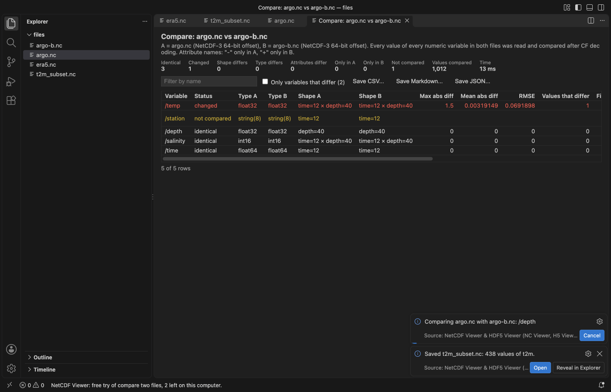

Open files in VS Code and Cursor / Science data
Compare two NetCDF files
To check a model run against a reference without nccmp or a Python script, install NetCDF Viewer & HDF5 Viewer by Zovo in VS Code, open one file and click "Compare with...", or select two files in the Explorer. It lists variables in one file only and changed shapes, types and attributes, then reads every value of every numeric variable in both files after CF decoding. Per variable you get the max and mean absolute difference, RMSE, how many values differ and where the largest difference is. Viewing is free; the compare is Zovo Pro (USD 19 once) with 3 free tries.
Free, MIT license. Extension ID zovo.hdf5-netcdf-explorer, version 0.6.4. Needs VS Code 1.90.0 or newer.

Steps in VS Code
- Install NetCDF Viewer & HDF5 Viewer from the Marketplace, or press Ctrl+P (Cmd+P on macOS) and run
ext install zovo.hdf5-netcdf-explorer. - Click a
.nc,.h5or.hdf5file. It opens with the variable tree and the file overview. - Click "Compare with..." at the top of the viewer and pick the second file, or select both files in the Explorer and compare from the right-click menu.
- Tick "Only variables that differ". The largest difference is given as an index, for example
time=3, latitude=120, longitude=40. - Save the report as CSV, Markdown or JSON.
Steps in Cursor, Windsurf or VSCodium
- Open the Extensions view with Ctrl+Shift+X (Cmd+Shift+X on macOS).
- Search for
zovo.hdf5-netcdf-explorerand click Install. Cursor, Windsurf and VSCodium install from Open VSX, where it is published aszovo/hdf5-netcdf-explorer. - If your editor has no gallery, download the .vsix from the Open VSX page and run "Extensions: Install from VSIX...".
- Then use it the same way as in VS Code.
What NetCDF Viewer & HDF5 Viewer handles
- NetCDF-3, NetCDF-4 and HDF5 files.
- Values are compared after CF decoding, so a packed file and its unpacked copy compare equal. An optional tolerance is a setting.
- Global and per-variable attributes, shapes and types.
- "Export a subset" (also Zovo Pro) saves a range of a variable, by index, value or date, as NetCDF or a tidy CSV, like
ncks -d.
What it does not do
- Variables with different shapes are listed, not compared value by value.
- Text variables are not compared value by value.
Free and Zovo Pro
Free, and staying free: every format, the tree, attributes, the table, plots and maps with coastlines, Play, time series, Save PNG and Export slice.
Zovo Pro adds these tools to NetCDF Viewer. Each one works 3 times on your computer before it asks for a license. Nothing about Pro shows when you open a file: no popup, no countdown, no banner.
- Compare two files, like nccmp, with a report saved as CSV, Markdown or JSON.
- Export a subset by index, value or date, as NetCDF or a tidy CSV.
Zovo Pro costs USD 19 once. It is not a subscription, and one purchase covers every Zovo VS Code extension. Today it also covers the Pro tools in Hex Viewer, Postgres & MySQL Query Client and DOCX Viewer, and Pro tools added to other Zovo extensions later.
Two ways to unlock it:
- GitHub Sponsors: pick the "$19 one time" tier. Then, in VS Code, click a Pro tool and pick "Unlock with GitHub Sponsors" (or type "GitHub Sponsors" in the Command Palette) and sign in with the same GitHub account. A monthly sponsorship of USD 10 or more that is still running counts too.
- PayPal, no GitHub account needed: send USD 19 by PayPal with "Zovo Pro" in the note, then post the transaction ID with the Zovo Pro key form (a public GitHub issue, so post only the ID). The license key goes to the email address of your PayPal account within a day. Click a Pro tool and pick "I have a license key" (or type "license key" in the Command Palette) and paste it. The key is checked on your computer, with no network call.
A team of 5: USD 59 once by PayPal, with "Zovo Pro Team" in the note. Every rule and every Pro tool is on the Zovo Pro page.
In JetBrains IDEs (IntelliJ IDEA, PyCharm, WebStorm, CLion and others)
- NetCDF, HDF5 & NumPy Viewer by Zovo. Our JetBrains plugin. It was waiting for JetBrains review on 9 November 2026.
Other options
- nccmp. The command-line tool for this job:
nccmp -dmgfs a.nc b.nc. Free; it needs a NetCDF build. - CDO or xarray.
cdo diffv a.nc b.nc, orxr.open_dataseton both files and a difference in Python. - H5Web (
h5web.vscode-h5web, 107,048 installs, on Open VSX). Its own description: "Visualize HDF5 files in VS Code". Free. It views one file at a time.
Install counts and Open VSX status were checked on 9 November 2026. Descriptions in quotes are the extensions' own.
Questions
Do I need Python, NCO or nccmp?
No. The viewer reads NetCDF and HDF5 itself.
Does a packed file compare equal to its unpacked copy?
Yes. Values are compared after scale_factor, add_offset and fill values are applied.
What is free?
The tree, attributes, table, plots and maps, Play, time series, Save PNG and Export slice. Compare and Export a subset are Zovo Pro, USD 19 once, with 3 free tries each.
More about NetCDF Viewer & HDF5 Viewer
Read the NetCDF Viewer & HDF5 Viewer page for every feature and setting, or the source code on GitHub.
Related guides
- NetCDF Viewer & HDF5 Viewer on the VS Code Marketplace (also on Open VSX). Browses NetCDF, HDF5 and MATLAB .mat files in VS Code.
- A free NetCDF viewer that runs in VS Code
- Open an HDF5 (.h5) file in VS Code
- Shapefile to GeoJSON in VS Code
- See the distance and elevation gain of a GPX file
Zovo Pro and support
Zovo Pro: USD 19 once, every Zovo viewer. It turns on the Pro tools in this extension and in the other Zovo extensions you use. The free features stay free.
After a card payment your license key shows on the next page. Paste it with the command "Zovo Pro: Enter a key".
You can also support the work with no Pro:
Need your format supported?
Open a format request with a sample file, and I reply there whether it can be done. For USD 299 once, through this GitHub Sponsors tier, I add your file format or a missing feature to this extension, with tests, within 7 days.